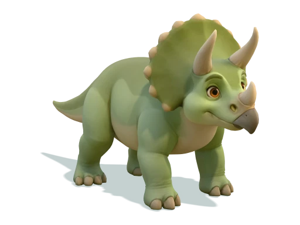

Hvar er vinur minn?
Leiðin að berjalundinum0 / 3 pör
- 1Greinin
- 2Trjábrúin
- 3Mýrin
Allt ævintýrið Veldu „Nær“ til að leika áfram

SEX VINIR · EIN LEIÐ
Öll komumst við!
Þið lyftuð, ýttuð og byggðuð. Nú njóta allir vinirnir berjalundarins.
Hreiðurlundurinn vaknar…
Mosi finnur ungana.
Lundurinn náði ekki að opnast.
Prófaðu að endurhlaða síðunni.